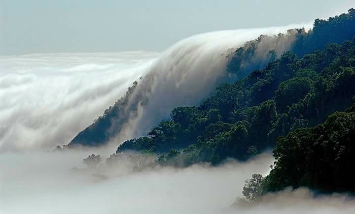
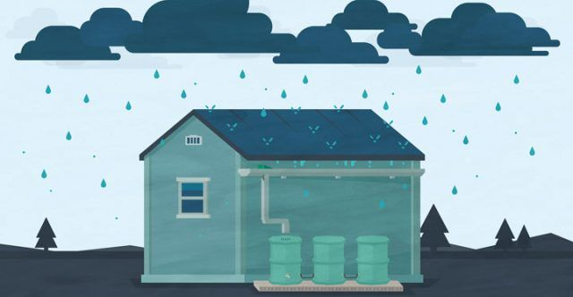
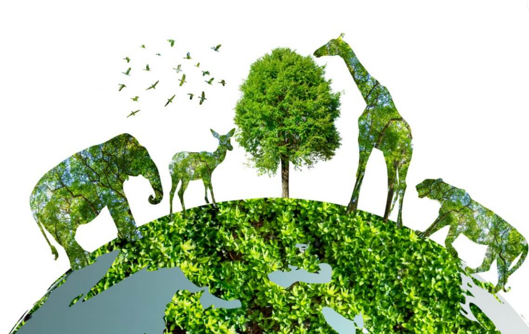

A qui podemos encontrar diferentes tipos de servicios 1.- Servicios Ambientales México es uno de los países con mayor biodiversidad en el mundo. Su ubicación geográfica, su complejidad orográfica y geológica, así como su variedad en climas permite que el 70.2% de la extensión total del territorio presente casi todos los tipos de vegetación natural terrestre. De esa superficie con vegetación natural terrestre, 33% lo conforman ecosistemas forestales arbolados (bosques y selvas), mientras que 29% son matorrales xerófilos y un 8.2% de otras áreas forestales (pastizales naturales, pastizales halófilos, pastizales gypsófilos, popales y tulares, principalmente). En contraparte, el 29.74 % de la superficie en México corresponde a usos de suelo distintos al forestal, como son: agrícola, pecuario, acuícola, zonas urbanas, entre otros.1 En México el 70% de los bosques y selvas son propiedad de comunidades y ejidos, y alrededor de 3 mil comunidades realizan alguna actividad de aprovechamiento forestal, de las cuales 600 de ellas han constituido alguna empresa forestal comunitaria. De la población total que habita en los bosques, cerca de 5 millones son población indígena. A través del manejo forestal comunitario se permite conservar y proteger importantes ecosistemas forestales que brindan diversos servicios ambientales a la sociedad, como son la captura de agua, conservación de la biodiversidad, la captura y el mantenimiento de reservas de carbono. 2.-Captación y filtración de agua ¿Qué es un Sistema de Captación de Agua Pluvial? Consiste en recolectar el agua que se precipita de forma natural en nuestras azoteas, filtrarla para retener las impurezas, almacenarla y finalmente desinfectarla para convertirla en potable y utilizarla en diferentes actividades. Problemática: El agua es el elemento más importante para la vida, cada vez tenemos menos agua disponible para el consumo humano; consecuencia de su mal uso, incremento poblacional y la poca conciencia sobre la importancia que tiene. Solución: Una solución sustentable para abastecernos del agua es aprovechar los ciclos naturales, en este caso la lluvia a través de un Sistema de Captación de Agua Pluvial. Recuperar el agua pluvial a partir de los techos de las casas ahorra el consumo de la red de agua potable por lo tanto un ahorro económico, no se malgastarían los recursos naturales y se beneficia al medio ambiente. Un Sistema de Captación de Agua Pluvial típico implementado en domicilios consta de los siguientes componentes: Techo, (captación del agua pluvial). Canales o canaletas. Bajates Filtro de Zeolitas. Cisterna (recetor de agua filtrada). Desinfección. 3.- Protección de la biodiversidad. Planeación para la conservación y restauración de la biodiversidad La extraordinaria diversidad biológica y cultural de México impone grandes retos para su conservación, restauración y uso sustentable. Con el objetivo de brindar herramientas sobre las prioridades de conservación de nuestro patrimonio natural que contribuyan con conocimiento para orientar y fortalecer la protección in situ y el manejo sustentable de los hábitats y especies más vulnerables de nuestro país, la CONABIO ha realizado varios análisis que han contado con una amplia participación de especialistas de diversas instituciones académicas y de investigación, organizaciones de la sociedad civil y dependencias gubernamentales de los tres niveles de gobierno. Estos análisis han evaluado los sistemas de áreas protegidas nacionales y regionales, sobre diversos aspectos como su representatividad y complementariedad, los patrones de distribución de la biota y la conectividad ecológica, entre otros, y son útiles en la planeación de estrategias de manejo y conservación y para brindar acceso a información sintetizada a los usuarios interesados Los primeros esfuerzos se iniciaron hace más de dos décadas al identificar las regiones prioritarias de México y las áreas de importancia para la conservación de las aves. Posteriormente, para dar cumplimiento al Programa de Trabajo sobre Áreas Protegidas de 2004 del Convenio sobre la Diversidad Biológica, la CONABIO en acuerdo con la Comisión Nacional de Áreas Naturales Protegidas (CONANP) y con más de 260 colaboradores, coordinó los análisis de vacíos y omisiones en conservación del sistema de áreas protegidas con el enfoque de la planeación sistemática de la conservación. En conjunto, se incluyeron más de 3,500 coberturas de datos biológicos para determinar las prioridades con mayor detalle, además de incorporar los principales factores de presión y amenaza que comprometen la conservación de la diversidad biológica en el largo plazo. Los sitios de atención prioritaria y los sitios prioritarios para la restauración surgen como una propuesta de integración de los análisis de vacíos y omisiones de ambientes terrestres, acuáticos epicontinentales (“de agua dulce”) y costeros, para distinguir entre los espacios naturales que cuentan con la mayor diversidad biológica y en mejor estado de conservación de los que requieren de esfuerzos para su recuperación; estos sitios son complementarios.  |